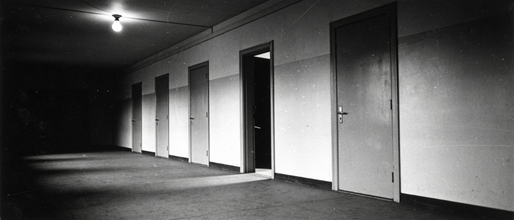

Níveis de consciência Breakthrough Advertising · Introdução à essência do copywriting
Os desejos de massa, os dois produtos que todo anúncio vende e os cinco níveis em que o cliente chega ao título. A introdução de Eugene M. Schwartz, por escrito.
Investiga e domina as energias fundamentais do universo, buscando padrões e princípios para prever e aplicar conhecimento.
Navega por torrentes de bilhões de dólares, antecipando movimentos do mercado com base na psicologia coletiva e nos dados.
Conecta-se com as esperanças, medos e desejos de milhões de pessoas, transformando essas emoções em ações desejadas.
Descobrir o “porquê” por trás das ações humanas é a chave. É a habilidade de identificar esses motivadores universais que transforma um bom copy em um copy extraordinário, capaz de gerar resultados impressionantes.
O copywriting, em sua forma mais pura, adentra as profundezas da psicologia humana. Não se trata apenas de palavras, mas de compreender e se conectar com as forças naturais que impulsionam as decisões das pessoas. Assim como o jogo da bolsa de valores, exige uma percepção aguda das dinâmicas subjacentes.
A essência da redação persuasiva, da especulação financeira e da ciência compartilha um denominador comum: lidar com forças imutáveis. Não podemos alterar essas forças, mas ao compreendê-las profundamente podemos nos posicionar para extrair o máximo delas e, no caso do copywriting, dobrar o faturamento da noite para o dia.
Estratégia Básica de Persuasão
Como criar um título vencedor que ninguém escreveu antes
Desejos de massa: a força que impulsiona sua publicidade
Os desejos de massa são a manifestação pública dos desejos privados das pessoas.
O desejo das mulheres de serem atraentes, o dos homens de serem viris e o de ambos de serem saudáveis.
Dificuldades com dispositivos tecnológicos e inovações que geram demanda por soluções.
O início, a realização ou a reversão de uma tendência social ou de mercado.
Como canalizar o desejo de massa para o seu produto
Três ferramentas: o conhecimento sobre esperanças, sonhos e emoções das pessoas; o produto do anunciante; e uma mensagem que conecte os dois.
Escolha o desejo mais poderoso. Selecione o único desejo de massa que melhor se aplica ao seu produto. Apenas um deve predominar: o que vai capturar o cliente já no título.
Meça suas três dimensões. Urgência e intensidade (quanto dói?), resistência (se repete?) e alcance (quantas pessoas sentem isso?).
Reconheça-o e ofereça a solução no título. O título é a ponte entre o cliente e o produto. Deve tocá-lo em seu nível de consciência atual e mostrar que a solução é acessível.
Todo produto que você vende é, na verdade, dois produtos
As pessoas não compram o produto físico. Compram o que o produto faz por elas.
O material tangível: vidro, papel, tabaco, metal. A estrutura física que você pode tocar e ver. Por si só, não vende.
Os benefícios que proporciona ao consumidor. A verdadeira razão da compra. O que o produto faz, o que representa e como satisfaz o desejo de massa.
Um automóvel não vende transporte nem metal. Vende confiabilidade, novidade e a sensação de controle. É isso que precisa ser comunicado.

Os 5 níveis de consciência do cliente
Cada cliente chega com um nível distinto de consciência. Seu copy deve falar com ele exatamente onde ele está.
O cliente ama o produto e só precisa do preço certo.
Sabe que existe, mas não está convencido de que funciona.
Tem o desejo, mas ignora que a sua solução existe.
Reconhece o problema, mas não o seu produto como solução.
O mercado mais difícil: é preciso criar a consciência do zero.
O cliente já quer o produto
Nesse nível, o cliente ama o produto, aprecia o que ele faz e deseja o que ele oferece. No entanto, ainda não conseguiu adquiri-lo. O título só precisa dizer um pouco mais que o nome do produto e um preço acessível. Por isso, o marketing de resposta direta é usado com menos frequência para produtos de mercado de massa.
Quando se aplica ao mercado de massa — como na venda de carros — apresenta-se uma oferta mais elaborada para ampliar e diferenciar os benefícios (financiamento sem juros, devolução do dinheiro, etc.).
Em geral, o marketing de resposta direta é muito mais apropriado para promoções que precisam de um argumento de venda detalhado e de uma oferta mais completa.
Conhece o produto, mas não está convencido
Aqui, o cliente potencial pode não estar completamente ciente de tudo o que o produto oferece, ou pode não estar convencido de quão bem ele funciona, ou ainda não saber quanto ele melhorou.
Este é o nível onde se concentra a maior parte da publicidade. É frequentemente onde atua o “marketing de marca”: os clientes potenciais já ouviram falar da marca, que está ligada a um desejo público e demonstrou que pode satisfazê-lo.
Nesse caso, o objetivo do copy é simplesmente mostrar que o seu produto é genuinamente superior às outras opções similares que o cliente potencial conhece e tem à disposição.
Quer o resultado, mas não sabe que o seu produto existe
O cliente potencial sabe — ou percebe de imediato — que deseja o que o produto oferece, mas não tem ideia de que existe um produto — o seu produto — capaz de fazer isso por ele.
Por exemplo: o cliente sabe que quer economizar dinheiro com gasolina todo mês. Mas não sabe que existe um aplicativo que o leva ao posto mais barato onde quer que ele esteja.
Segundo Gene Schwartz, o objetivo com clientes nesse nível é duplo:
Identificar o desejo que está dentro do cliente potencial, ainda que não esteja necessariamente em sua mente consciente.
Expressar esse desejo — e sua solução — de forma tão clara e impactante que o cliente possa reconhecê-lo de imediato.
Tem uma necessidade, mas não vê a conexão com o seu produto
O cliente potencial não tem apenas um desejo, mas uma necessidade. Ele a reconhece de imediato. No entanto, ainda não vê a conexão entre satisfazer essa necessidade e o seu produto.
Este é o anúncio de “solução de problemas”. É uma evolução do nível anterior, mas um pouco mais desafiador. Você começa expressando o problema e/ou a solução no seu título e depois o intensifica até que o cliente perceba que não pode seguir adiante sem ele.
Não sabe que precisa do seu produto
Este é o nível mais desafiador de todos. O cliente potencial não tem ideia do que deseja, ou não consegue admitir isso para si mesmo, a menos que seja levado a perceber através de sua necessidade.
Essa necessidade é tão ampla e indefinida que é difícil resumi-la em um único título, ou é um segredo que simplesmente não pode ser expresso em palavras.
Este é o cliente potencial mais complicado de alcançar. É um comprador lógico para o seu produto, mas mentalmente está longe de aceitar a ideia de que precisa dele.